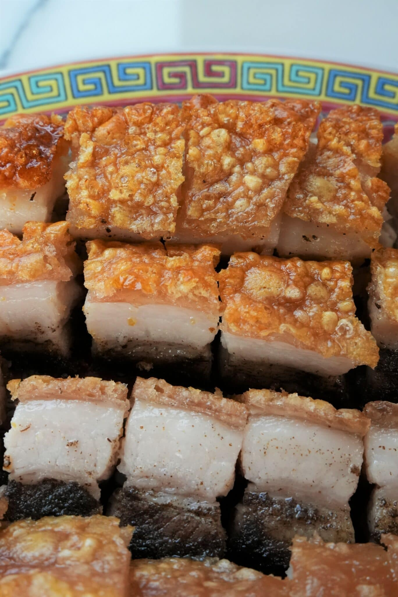

Crispy Pork Belly

Description:
The PERFECT JUICY PORK BELLY with CRISPY SKIN – A great recipe to make for family and friends. Getting the perfect Chinese pork belly is not as hard as it looks!
Ingredients:
- 2.5 lb pork belly skin-on
- 1 tbsp kosher salt
- 1/2 tbsp white pepper
- 1/2 tbsp five spice powder
- 1/2 tbsp sugar
- 1 tbsp shaoxing wine
- 2 tsp shaoxing wine
- 1 cup kosher salt
- 1 egg white beaten
- 1 tbsp white vinegar
Steps:
- Pat your skin on pork belly dry and poke holes all across the skin of the pork. Ensure that the holes only puncture the skin and do not go all the way through the meat.
- To the meat side, use a knife to make 1/2" cuts lengthwise across the pork belly. In a small bowl, combine salt, white pepper, five spice powder, sugar, and shaoxing wine to make a paste. Evenly spread the paste on the meat side of the pork and crevices ensuring not to touch the skin.
- Place the punctured and marinated pork on a piece of foil and create a foil boat wrapping the pork, leaving the skin exposed. Place in the fridge for 24 hours (48 hours for best results) to help the skin further dry out.
- Once the skin is dry, mix together salt and a beaten egg white. Brush the skin with a layer of white vinegar, then evenly layer the salt/egg mixture directly on the skin.
- Bake at 300F for 30 minutes, then remove the salt from the skin and brush off any excess salt. At this point the skin should be softened. Poke more holes throughout the skin.
- Bake at 450F for 30-45 minutes or until the skin has puffed up. If any edges are starting to burn, place a small piece of foil to cover to get the skin as evenly crisp as possible. If needed, place pork under broiler for a few minutes to speed up the blistering process (watch carefully to ensure skin does not burn). Enjoy!